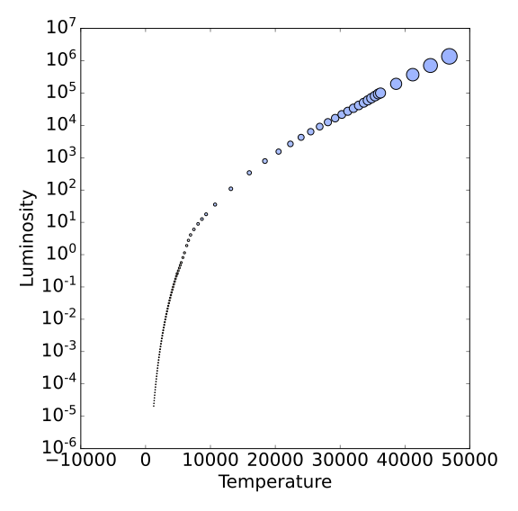
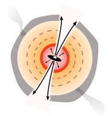

Star Formation in Crowds
Star formation changes with environment.
High-mass stars define the neighborhood.
John Bally, Ashley Barnes, Nate Bastian, Cara Battersby,
Henrik Beuther, Crystal Brogan, Yanett Contreras, Joanna
Corby, Jeremy Darling, Chris De Pree, Roberto Galván-Madrid,
Guido Garay, Jonathan Henshaw, Todd Hunter, J. M. Diederik
Kruijssen, Steven Longmore, Xing Lu, Fanyi Meng, Elisabeth A.C.
Mills, Juergen Ott, Jaime E. Pineda, Álvaro Sánchez-Monge,
Peter Schilke, Anika Schmiedeke, Daniel Walker, David Wilner,
Leonardo Testi, Rowan Smith, Ke Wang, James Dale, Jeremy
Darling, Robert Loughnane, Nate Bastian, Erik Rosolowsky, Eric
Koch, Ciriaco Goddi, Brett McGuire, Dick Plambeck, Melvyn
Wright
Students:
Anna McLeod, Connor McClellan, Justin Otter, Natalie Butterfield, Terry Melo, Virginie Montes
Slides available at tinyurl.com/AG-UF2019Colloquium
Software
Star formation drives the evolution of the universe
Star Formation oversimplified
Ṁ
The star formation rate, i.e., how much gas turns to stars
L / M
The light per unit mass, i.e., how stars and stellar populations turn matter into light
High-mass stars produce light & heavy elements
low-mass stars live practically forever


Point color shows effective temperature, point size shows luminosity (left) and mass (right)
The stellar initial mass function (IMF)
Stars are randomly sampled from this distribution
Almost all of the light in star-forming galaxies is produced by high-mass stars
The stars form in and from gas
Most of what we know of star formation in detail comes from small local clouds
Most of what we know of star formation in detail comes from small local clouds
Cartoon of low-mass star formation

A molecular cloud fragments
 


The core forms a central protostar

The protostar heats its parent core and forms a disk

It drives an outflow and consumes or blows out its core
Eventually, you end with just a star-disk system

Cartoon of low-mass star formation
Most of what we know of star formation in detail comes from small local clouds
They contain only low-mass stars and do not represent star formation in general
Most stars form in denser regions
NGC 1333, an embedded low-mass cluster
Lada & Lada 2003: >70% in embedded clusters
Most stars form in denser regions
NGC 3603 is a high-mass (104 M⊙) cluster
Lada & Lada 2003:
5-10% in bound clusters
in our Galaxy
5-10% in bound clusters
in our Galaxy
In denser (parts of) galaxies, more stars form in clusters
Star formation drives the evolution of the universe
Most stars in most galaxies formed long ago
Galaxies were smaller & denser back then
Our own Galaxy's center, the CMZ, has denser gas than the Galactic average
Cold Dust
Hot, ionized gas
Hot dust/PAHs
Hot, ionized gas
Hot dust/PAHs
Our own Galaxy's center, the CMZ, has denser gas than the Galactic average
Our own Galaxy's center, the CMZ, has denser gas than the Galactic average
The "Bound Cluster Fraction" is higher in the CMZ
Summary so far:
- At higher density, more stars form in clusters
- Galaxies were denser in the past
- Most stars formed when galaxies were denser
- Most stars formed in or near high-mass clusters, in regions unlike the "local neighborhood"
How is star formation in high-mass clusters different?
- Feedback from one star affects many in clustered regions
- IMF depends on density, feedback, global conditions (e.g., Jones & Bate 2018, Narayanan & Dave 2012)
- Total star formation efficiency is higher.
- Collisions assemble the most massive stars?
(e.g., Fujii+ & PZ 2013, but see Moeckel & Clarke 2011)
-
Interactions certainly affect disks (e.g., Wijnen+ 2017, Vincke+ 2016)
-
Cartoon of high- and low-mass star formation
Main difference: massive stars affect their surroundings

Classic HII region feedback:
O-stars clear out their environment
Accreting massive young stars affect their environment
Accreting massive young stars affect their environment
The characteristic fragmentation scale
The Jeans Mass MJ is the mass where gravity and thermal pressure are balanced.
MJ ∝ T3/2 ρ−1/2
The characteristic fragmentation scale is larger
Jeans Mass
MJ ∝ T3/2 ρ−1/2
The cartoon in the context of HMSF

These high mass cores suppress low-mass star formation (LMSF) in their vicinity.
They reduce or prevent LMSF in the cores of stellar clusters.
More extreme: 'cooperative accretion'

With enough high-mass stars forming concurrently, massive stars may prevent fragmentation entirely.
If they still have enough gravity to bind the gas, the remaining gas is forced onto the most massive gravitational sinks.
If they still have enough gravity to bind the gas, the remaining gas is forced onto the most massive gravitational sinks.
Top-heavier mass functions in high-mass clusters

{kind=link}
{kind=link}
Summary part two:
- High mass stars heat their environment, suppressing Jeans fragmentation and preventing lower-mass stars from forming
- The feedback from high-mass stars is exaggerated in denser regions
- By cooking their surroundings, high-mass stars help themselves form, and they may help create their own siblings
Large scales again:
What governs the star formation rate?
Turbulent ISM models
Turbulent ISM models
Turbulent ISM models
Local cloud studies support the idea of a gas density threshold for star formation


Thresholds are used in simulations to say
"if gas reaches this density, turn it into stars"
"if gas reaches this density, turn it into stars"
The California molecular cloud with protostars
ALMA enables protostar counting in
distant, massive clouds
Sgr B2: the most massive & star-forming cloud in the Galaxy
Dendrocat by Connor McClellan (UF) is making protostar identification easier
Is there a threshold?
Is there a threshold?
A threshold separates Sgr B2 from The Brick
Summary Part 3: SF Thresholds & Star Counts
- If star formation occurs above density thresholds, they are not universal.
- Clouds within the CMZ appear to have a higher and consistent threshold, so an environmentally-dependent threshold is plausible.
- Turbulent theories work, but we can rule out subclasses of them and measure the defining parameters
- (proto)Star-counting measurements of star formation are now possible throughout the Galaxy.
Future-looking projects:
ALMA-IMF and salts in OrionWhat shapes the IMF?
The IMF has likely changed shape over cosmic time
Bigger galaxies form stars earlier and in warmer, denser conditions
Jeans mass (characteristic fragmentation scale in clouds) based model:

Classic model: a "core mass function" maps to the IMF
Many alternatives, no consensus on which is best
The ALMA-IMF program is surveying 15 high-mass star-forming regions
PI: F. Motte, A. Ginsburg, P. Sanhueza, F. Louvet
How do the core and protostar mass functions evolve?
ALMA-IMF aims to measure the CMF
Early work in W43 (Motte+ 2018) hint at a shallower high-end CMF.
ALMA-IMF will also produce protostar counts for the most massive
clusters in the Galaxy, which will let us test star formation theories.
Several student projects are available, e.g.: modeling source SEDs,
modeling populations, cataloging sources, chemistry across the IMF
Forming stars are surrounded by disks
Observing the Keplerian rotation profile of a disk is the most direct way to measure a protostar's mass
(we can only see the disk, not the star itself)
Orion Source I:
a disk around a 15 M⊙ YSO
Salt: NaCl
We can use salts to measure HMYSO masses
- NaCl, KCl are only in the disk, not the outflow (water traces both)
- NaCl is detected in at least one other HMYSO (Maud, Ginsburg+ in prep)
- Salts are observable with ALMA, the JVLA, and the future ngVLA
- Future student projects will involve observing and modeling salt disks to measure HMYSO masses
Summary
Stars form differently in high-density environments
The local neighborhood is not representative
- More stars form in clusters
- More stars are affected by feedback from neighbors
The local neighborhood is not representative
- ALMA enables detailed study of distant regions (Sgr B2, W51, W43 so far)
- ALMA-IMF will expand the sample to match or exceed local clouds
- Salt-based kinematic mass measurements are coming
This presentation: tinyurl.com/AG-UF2019Colloquium
Possible future uses for these lines?
- Metallicity measurement in deeply embedded star-forming environments? (at least of Na, K, Cl)
- Disk kinematics of high-mass stars, which are otherwise unobservable (τ>1 at mm wavelengths)
- Disk kinematic measurements at early stages?
- Probe dust destruction (and/or formation?) in outflows, disks?
- Probe radiation environment around HMYSOs?
Why do we see salt?
- Previously, NaCl & KCl only in AGB* atmospheres,
associated with dust formation - Most likely dust destruction here
Dust destruction happens immediately as the outflow is launched? - What about excitation? We see vibrationally excited lines, which are not seen in AGB*s
Temperature?
Temperature?
We do not have a viable model to explain these temperatures
A strong non-blackbody radiation field from 25-40 µm may explain them.
Forsterite (MgSiO4) has some emission bands in that range. Maybe?